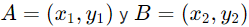
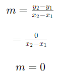

Pendiente de una Recta – Fórmula y Ejercicios
La pendiente de una recta define a la inclinación de la recta con respecto al eje x. La pendiente puede ser calculada al obtener la razón de la diferencia en el cambio en y sobre el cambio en x.
Fórmula para la pendiente de una recta
La fórmula de la pendiente es derivada usando las coordenadas de dos puntos que se ubican en la recta. Entonces, encontramos la pendiente de una recta al formar una fracción, en donde el numerador es igual a la diferencia de las coordenadas en y y el denominador es igual a la diferencia de las coordenadas en x.
Es decir, si es que tenemos los puntos  , la fórmula de la pendiente es:
Fórmula de la pendiente
Pendiente de una recta horizontal
La pendiente de una recta horizontal puede ser encontrada aplicando la fórmula de la pendiente teniendo en cuenta que las coordenadas en y de todos los puntos que se ubican en una recta horizontal son las mismas. Entonces, tenemos:
Esto significa que la pendiente de todas las rectas horizontales es igual a 0.
Pendiente de una recta vertical
Las líneas verticales no tienen pendiente, ya que no podemos definir a la inclinación de líneas verticales de forma numérica. Esto se debe a que las coordenadas x de todos los puntos en una línea vertical son las mismas. Entonces, cuando aplicamos la fórmula de la pendiente con líneas verticales, tenemos:
Sabemos que la división por 0 es indefinida.
Pendiente de líneas paralelas
Consideremos las siguientes dos líneas paralelas, l1 y l2, las cuales tienen las inclinaciones α y β. Para que las líneas sean paralelas, las inclinaciones deben ser las mismas. Esto significa que tenemos α = β.
Entonces, dos líneas paralelas siempre tienen la misma pendiente. Por lo tanto, si es que queremos determinar si es que dos o más líneas son paralelas, tenemos que asegurarnos de que sus pendientes sean las mismas.
Fuente: https://www.neurochispas.com/matematicas/pendiente-de-una-recta-formula-y-ejercicios/